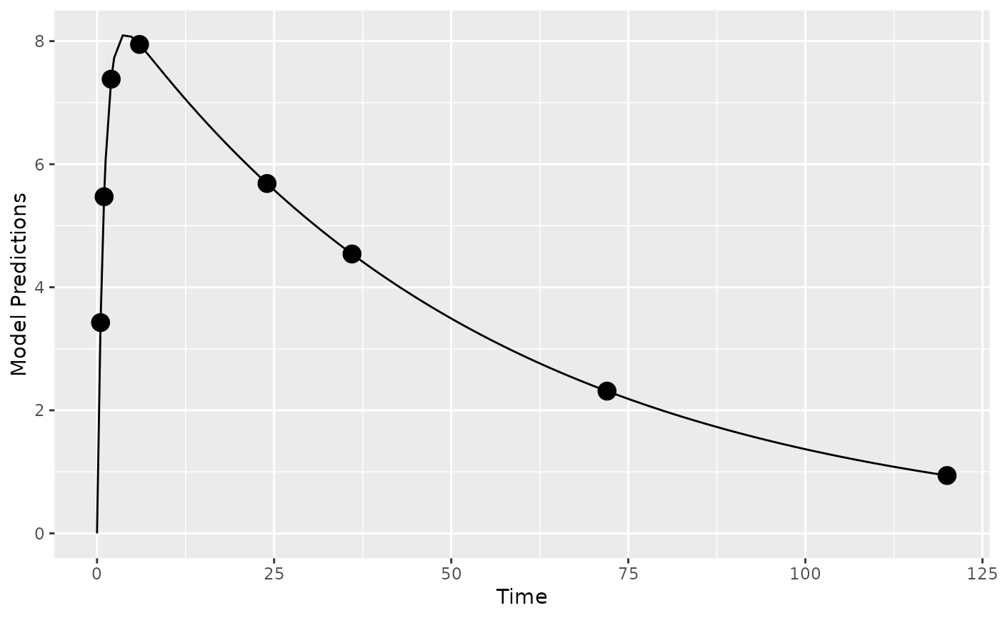
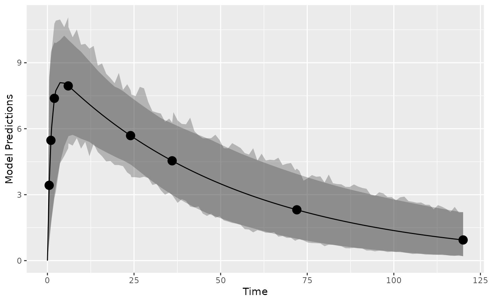
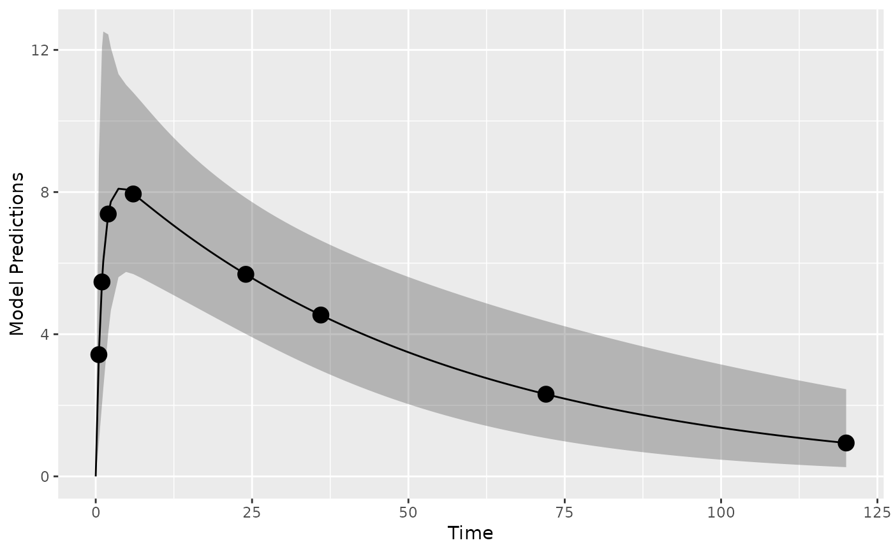
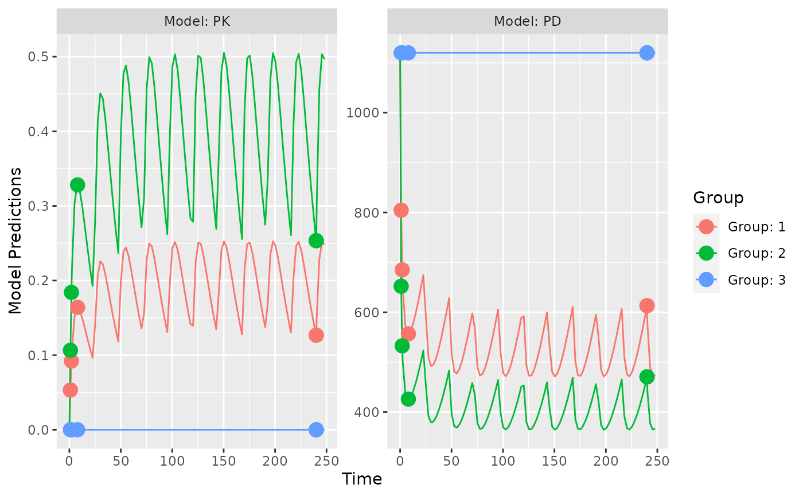
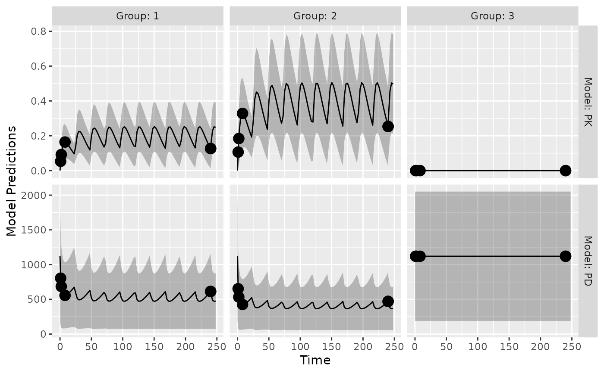

Function plots model predictions for the typical value in the population, individual predictions and data predictions.
Usage
plot_model_prediction(
poped.db,
model_num_points = 100,
groupsize_sim = 100,
separate.groups = F,
sample.times = T,
sample.times.IPRED = F,
sample.times.DV = F,
PRED = T,
IPRED = F,
IPRED.lines = F,
IPRED.lines.pctls = F,
alpha.IPRED.lines = 0.1,
alpha.IPRED = 0.3,
sample.times.size = 4,
DV = F,
alpha.DV = 0.3,
DV.lines = F,
DV.points = F,
alpha.DV.lines = 0.3,
alpha.DV.points = 0.3,
sample.times.DV.points = F,
sample.times.DV.lines = F,
alpha.sample.times.DV.points = 0.3,
alpha.sample.times.DV.lines = 0.3,
y_lab = "Model Predictions",
facet_scales = "fixed",
facet_label_names = T,
model.names = NULL,
DV.mean.sd = FALSE,
PI = FALSE,
PI_alpha = 0.3,
...
)Arguments
- poped.db
A PopED database.
- model_num_points
How many extra observation rows should be created in the data frame for each group or individual per model. If used then the points are placed evenly between
model_minxtandmodel_maxxt. This option is used byplot_model_predictionto simulate the response of the model on a finer grid then the defined design. IfNULLthen only the input design is used. Can be a single value or a vector the same length as the number of models.- groupsize_sim
How many individuals per group should be simulated when DV=TRUE or IPRED=TRUE to create prediction intervals?
- separate.groups
Should there be separate plots for each group.
- sample.times
Should sample times be shown on the plots.
- sample.times.IPRED
Should sample times be shown based on the IPRED y-values.
- sample.times.DV
Should sample times be shown based on the DV y-values.
- PRED
Should a PRED line be drawn.
- IPRED
Should we simulate individual predictions?
- IPRED.lines
Should IPRED lines be drawn?
- IPRED.lines.pctls
Should lines be drawn at the chosen percentiles of the IPRED values?
- alpha.IPRED.lines
What should the transparency for the IPRED.lines be?
- alpha.IPRED
What should the transparency of the IPRED CI?
- sample.times.size
What should the size of the sample.times be?
- DV
should we simulate observations?
- alpha.DV
What should the transparency of the DV CI?
- DV.lines
Should DV lines be drawn?
- DV.points
Should DV points be drawn?
- alpha.DV.lines
What should the transparency for the DV.lines be?
- alpha.DV.points
What should the transparency for the DV.points be?
- sample.times.DV.points
TRUE or FALSE.
- sample.times.DV.lines
TRUE or FALSE.
- alpha.sample.times.DV.points
What should the transparency for the sample.times.DV.points be?
- alpha.sample.times.DV.lines
What should the transparency for the sample.times.DV.lines be?
- y_lab
The label of the y-axis.
- facet_scales
Can be "free", "fixed", "free_x" or "free_y"
- facet_label_names
TRUE or FALSE
- model.names
A vector of names of the response model/s (the length of the vector should be equal to the number of response models). It is Null by default.
- DV.mean.sd
Plot the mean and standard deviation of simulated observations.
- PI
Plot prediction intervals for the expected data given the model. Predictions are based on first-order approximations to the model variance and a normality assumption of that variance. As such these computations are more approximate than using
DV=Tandgroupsize_sim = some large number.- PI_alpha
The transparency of the PI.
- ...
Additional arguments passed to the
model_predictionfunction.
Value
A ggplot object. If you would like to further edit this plot don't
forget to load the ggplot2 library using library(ggplot2).
See also
Other evaluate_design:
evaluate.fim(),
evaluate_design(),
evaluate_power(),
get_rse(),
model_prediction(),
plot_efficiency_of_windows()
Other Simulation:
model_prediction(),
plot_efficiency_of_windows()
Other Graphics:
plot_efficiency_of_windows()
Examples
## Warfarin example from software comparison in:
## Nyberg et al., "Methods and software tools for design evaluation
## for population pharmacokinetics-pharmacodynamics studies",
## Br. J. Clin. Pharm., 2014.
library(PopED)
## find the parameters that are needed to define from the structural model
ff.PK.1.comp.oral.md.CL
#> function (model_switch, xt, parameters, poped.db)
#> {
#> with(as.list(parameters), {
#> y = xt
#> N = floor(xt/TAU) + 1
#> y = (DOSE * Favail/V) * (KA/(KA - CL/V)) * (exp(-CL/V *
#> (xt - (N - 1) * TAU)) * (1 - exp(-N * CL/V * TAU))/(1 -
#> exp(-CL/V * TAU)) - exp(-KA * (xt - (N - 1) * TAU)) *
#> (1 - exp(-N * KA * TAU))/(1 - exp(-KA * TAU)))
#> return(list(y = y, poped.db = poped.db))
#> })
#> }
#> <bytecode: 0x560c75e8e688>
#> <environment: namespace:PopED>
## -- parameter definition function
## -- names match parameters in function ff
sfg <- function(x,a,bpop,b,bocc){
parameters=c(CL=bpop[1]*exp(b[1]),
V=bpop[2]*exp(b[2]),
KA=bpop[3]*exp(b[3]),
Favail=bpop[4],
DOSE=a[1])
return(parameters)
}
## -- Define initial design and design space
poped.db <- create.poped.database(
ff_fun=ff.PK.1.comp.oral.sd.CL,
fg_fun=sfg,
fError_fun=feps.prop,
bpop=c(CL=0.15, V=8, KA=1.0, Favail=1),
notfixed_bpop=c(1,1,1,0),
d=c(CL=0.07, V=0.02, KA=0.6),
sigma=0.01,
groupsize=32,
xt=c( 0.5,1,2,6,24,36,72,120),
minxt=0,
maxxt=120,
a=70)
## create plot of model without variability
plot_model_prediction(poped.db)

## create plot of model with variability by simulating from OMEGA and SIGMA
plot_model_prediction(poped.db,IPRED=TRUE,DV=TRUE)

## create plot of model with variability by
## computing the expected variance (using an FO approximation)
## and then computing a prediction interval
## based on an assumption of normality
## computation is faster but less accurate
## compared to using DV=TRUE (and groupsize_sim = 500)
plot_model_prediction(poped.db,PI=TRUE)

##-- Model: One comp first order absorption + inhibitory imax
## -- works for both mutiple and single dosing
ff <- function(model_switch,xt,parameters,poped.db){
with(as.list(parameters),{
y=xt
MS <- model_switch
# PK model
N = floor(xt/TAU)+1
CONC=(DOSE*Favail/V)*(KA/(KA - CL/V)) *
(exp(-CL/V * (xt - (N - 1) * TAU)) * (1 - exp(-N * CL/V * TAU))/(1 - exp(-CL/V * TAU)) -
exp(-KA * (xt - (N - 1) * TAU)) * (1 - exp(-N * KA * TAU))/(1 - exp(-KA * TAU)))
# PD model
EFF = E0*(1 - CONC*IMAX/(IC50 + CONC))
y[MS==1] = CONC[MS==1]
y[MS==2] = EFF[MS==2]
return(list( y= y,poped.db=poped.db))
})
}
## -- parameter definition function
sfg <- function(x,a,bpop,b,bocc){
parameters=c( V=bpop[1]*exp(b[1]),
KA=bpop[2]*exp(b[2]),
CL=bpop[3]*exp(b[3]),
Favail=bpop[4],
DOSE=a[1],
TAU = a[2],
E0=bpop[5]*exp(b[4]),
IMAX=bpop[6],
IC50=bpop[7])
return( parameters )
}
## -- Residual Error function
feps <- function(model_switch,xt,parameters,epsi,poped.db){
returnArgs <- ff(model_switch,xt,parameters,poped.db)
y <- returnArgs[[1]]
poped.db <- returnArgs[[2]]
MS <- model_switch
pk.dv <- y*(1+epsi[,1])+epsi[,2]
pd.dv <- y*(1+epsi[,3])+epsi[,4]
y[MS==1] = pk.dv[MS==1]
y[MS==2] = pd.dv[MS==2]
return(list( y= y,poped.db =poped.db ))
}
poped.db <-
create.poped.database(
ff_fun=ff,
fError_fun=feps,
fg_fun=sfg,
groupsize=20,
m=3,
bpop=c(V=72.8,KA=0.25,CL=3.75,Favail=0.9,
E0=1120,IMAX=0.807,IC50=0.0993),
notfixed_bpop=c(1,1,1,0,1,1,1),
d=c(V=0.09,KA=0.09,CL=0.25^2,E0=0.09),
sigma=c(0.04,5e-6,0.09,100),
notfixed_sigma=c(0,0,0,0),
xt=c( 1,2,8,240,240,1,2,8,240,240),
minxt=c(0,0,0,240,240,0,0,0,240,240),
maxxt=c(10,10,10,248,248,10,10,10,248,248),
discrete_xt = list(0:248),
G_xt=c(1,2,3,4,5,1,2,3,4,5),
bUseGrouped_xt=1,
model_switch=c(1,1,1,1,1,2,2,2,2,2),
a=list(c(DOSE=20,TAU=24),c(DOSE=40, TAU=24),c(DOSE=0, TAU=24)),
maxa=c(DOSE=200,TAU=40),
mina=c(DOSE=0,TAU=2),
ourzero=0)
## create plot of model and design
plot_model_prediction(poped.db,facet_scales="free",
model.names = c("PK","PD"))

## create plot of model with variability by
## computing the expected variance (using an FO approximation)
## and then computing a prediction interval
## based on an assumption of normality
## computation is faster but less accurate
## compared to using DV=TRUE (and groupsize_sim = 500)
plot_model_prediction(poped.db,facet_scales="free",
model.names = c("PK","PD"),
PI=TRUE,
separate.groups = TRUE)
